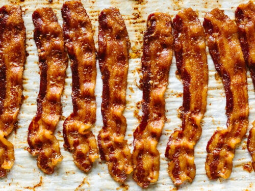

Bacon

What You Will Be Eating
Bacon is a type of salt-cured pork made from various cuts, typically the belly or less fatty parts of the back. It is eaten as a side dish, used as a central ingredient, or as a flavouring or accent.
Ingredients
Cooking Steps
- Preheat your oven to 400°F (200°C). Line a baking tray with parchment paper, then place the bacon side-by-side on the tray.
- Cook the bacon for 10 to 20 minutes or until it's reached your desired level of crispiness. Make sure to check on it after about 10 minutes, as some ovens cook faster. Remove the tray from the oven and transfer the bacon with tongs to a paper towel-lined plate.
- If you're rendering the bacon fat, line a fine mesh sieve with a paper towel. Then place the sieve over a glass storage container and pour the bacon fat from the sheet tray into the sieve. Cover the glass storage container and place it in the refrigerator for future cooking needs.
Return Home